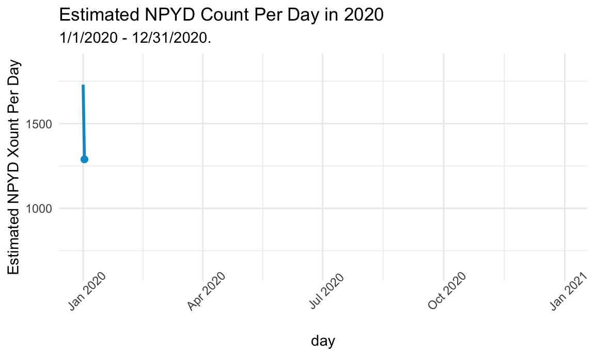

plot =
NYPD_2020_day_count %>%
ggplot(aes(x = date, y = count)) +
geom_line(col = "deepskyblue3", size = 1) +
geom_point(col = "deepskyblue3", size = 2) +
labs(title = "Estimated NPYD Count Per Day in 2020",
subtitle = "1/1/2020 - 12/31/2020.",
x = "day",
y = "Estimated NPYD Xount Per Day") +
theme(axis.text.x = element_text(angle = 45)) +
transition_reveal(date)
plot
NYPD_2020_weekdays %>%
plot_ly(
x = ~hour, y = ~dow, z = ~count, type = "heatmap", colors = "BuPu"
) %>%
colorbar(title = "2020", x = 1, y = 1) conclusion